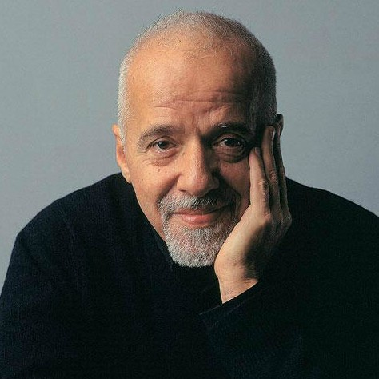

In 1982, Coelho published his first book, Hell Archives, which failed to make a substantial impact. In 1986 he contributed to the Practical Manual of Vampirism, although he later tried to take it off the shelves since he considered it "of bad quality." After making the pilgrimage to Santiago de Compostela in 1986, Coelho wrote The Pilgrimage, published in 1987. The following year, Coelho wrote The Alchemist and published it through a small Brazilian publishing house that made an initial print run of 900 copies and decided not to reprint it. He subsequently found a bigger publishing house, and with the publication of his next book Brida, The Alchemist took off. HarperCollins decided to publish the book in 1994. Later it became an international bestseller.
While trying to overcome his procrastination about launching his writing career, Coelho said, "If I see a white feather today, that is a sign that God is giving me that I have to write a new book." Coelho found a white feather in the window of a shop, and began writing that day. Since the publication of The Alchemist, Coelho has generally written at least one novel every two years. Four of them � The Pilgrimage, Hippie, The Valkyries and Aleph � are autobiographical, while the majority of the rest are broadly fictional. Other books, like Maktub, The Manual of the Warrior of Light and Like the Flowing River, are collections of essays, newspaper columns, or selected teachings. His work has been published in more than 170 countries and translated into eighty languages. Together, his books have sold in the hundreds of millions. On 22 December 2016, Coelho was listed by UK-based company Richtopia at number 2 in the list of 200 most influential contemporary authors.
However, reactions to his writing have not been without controversy. Though he was raised in a Catholic family, and describes himself as of that faith even now, his stance has been described as incompatible with the Catholic faith, because of its New Age, pantheist and relativist contents. And whatever his sales, reviews of Coelho's later work consistently note its superficiality.
In 2016 he was contacted by basketball player Kobe Bryant, who wanted to discuss a children's book project with him. Some months before Bryant's death, they started to write the book together, but after hearing about Bryant's death, Coelho decided to delete the whole draft. And in 2018, it was announced that Coelho had signed for a TV series based on the characters of his novels The Devil and Miss Prym, Brida and The Witch of Portobello.